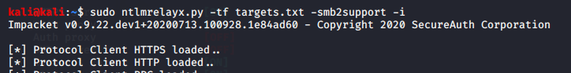

now we ll try to gain shell access through our kali machine

-i used so that interactve shell we get
triggered from windows the event again and then boom

so now using netcat open a port to listen


thus we ve got a shell finally
shares gives us a list of shares
use {sharename} lets us use the shares
u could also change its password too

and finally ls on admin

so we basically have full control over the file share we can add and as well remove files too

could do something like this also
-e is for execute so u can create a payload using msfvenom and execute it to get a shell in meterpreter
-c : for running some command when u get the access to machine
eg:
-c "whoami"
or even complex reverse shell
those hashes that we had would be useful in the post exploitation attacks